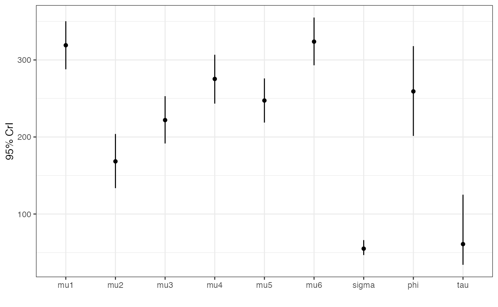

Using Likelihood Blocks
Bob Verity and Pete Winskill
2020-12-01
Source:vignettes/blocks.Rmd
blocks.RmdOnce we are familiar with the basics, there are some more advanced drjacoby techniques that can be useful when running computationally intensive likelihoods, or when fitting multi-level models. These rely on the fact that drjacoby works by breaking the likelihood down into a series of independent blocks, which are combined to produce the overall likelihood.
This vignette demonstrates the use of likelihood blocks to fit a simple random-effects model.
Problem motivation
For this example we will work with the chickwts dataset (one of the datasets that comes with R), which lists the weights of various chicks broken down by the feed they were given.
head(chickwts, 12) #> weight feed #> 1 179 horsebean #> 2 160 horsebean #> 3 136 horsebean #> 4 227 horsebean #> 5 217 horsebean #> 6 168 horsebean #> 7 108 horsebean #> 8 124 horsebean #> 9 143 horsebean #> 10 140 horsebean #> 11 309 linseed #> 12 229 linseed
We will pass this into drjacoby as a list over groups:
data_list <- split(chickwts$weight, f = chickwts$feed) data_list #> $casein #> [1] 368 390 379 260 404 318 352 359 216 222 283 332 #> #> $horsebean #> [1] 179 160 136 227 217 168 108 124 143 140 #> #> $linseed #> [1] 309 229 181 141 260 203 148 169 213 257 244 271 #> #> $meatmeal #> [1] 325 257 303 315 380 153 263 242 206 344 258 #> #> $soybean #> [1] 243 230 248 327 329 250 193 271 316 267 199 171 158 248 #> #> $sunflower #> [1] 423 340 392 339 341 226 320 295 334 322 297 318
There are 6 feed groups in total, and we will assume that values within a group are normally distributed each with a distinct unknown mean, leading to 6 parameters \(\mu_1\) to \(\mu_6\). For simplicity we will assume the same standard deviation \(\sigma\) in all groups. To make this a random effects framework, we will assume that \(\mu_1\) to \(\mu_6\) are themselves random draws from a normal distribution with mean \(\phi\) and standard deviation \(\tau\). Finally, we will put diffuse priors on \(\sigma\), \(\phi\) and \(\tau\) so that the data can “speak for itself”. For the more mathematically minded, the complete model can be written as follows:
\[ \begin{aligned} x_{i,j} &\sim Normal(\mu_i, \sigma^2) \hspace{5mm} \textrm{for } i \in 1:6, \\ \mu_i &\sim Normal(\phi, \tau^2) \hspace{5mm} \textrm{for } i \in 1:6, \\ \sigma &\sim Gamma(0.01, 100), \\ \phi &\sim Normal(0, 1000), \\ \tau &\sim Gamma(0.01, 100) \end{aligned} \] One way to fit this model in drjacoby is to write a likelihood function that simply loops through all the data and calculates the probability as a function of the parameters. However, this is very wasteful - if we are updating the parameter \(\mu_1\) then we only need to know the observed chick weights in feed group 1, along with the current estimates of \(\sigma\), \(\phi\) and \(\tau\). The same is true for all other \(\mu_i\) values, which only depend on a small subset of the data. In this example the inefficiency probably doesn’t matter too much, because the dataset is small and our likelihood is fast enough that we can brute force the problem, but it’s easy to imagine situations where this wouldn’t be the case. A better way to approach this problem is through likelihood blocks.
Defining blocks
You can imagine likelihood blocks as a vector of values, each of which gives the log-likelihood of one small part of the model. The overall log-likelihood is simply the sum over this vector. We are free to define as many blocks as we like, and the exact number we need will depend on the model design. A good way of figuring out how many blocks you need is to sketch out a “conditional dependence” table like the one shown below.

Conditional dependence table for the random effects model
In the first column we list all the data and free parameters of our model, and in the second column we list every parameter on which the first column depends (“depends” in this context means we need to know this parameter value in order to write down the probability). Don’t put data or fixed values in the second column, only free parameters, i.e. those we are trying to infer. We need one block for every unique combination of parameters in the second column. For example, \(\mu_1\) and \(\mu_2\) depend on the same combination of parameters (\(\phi\) and \(\tau\)) therefore they belong in the same block. We find that we need seven blocks in this example.
We define blocks in drjacoby using the optional “block” column of the parameters dataframe. For each parameter you should list all the blocks in which it can be found - for example \(\mu_1\) can be found in blocks 1 and 7 in the table above:
# define parameters dataframe df_params <- define_params(name = "mu1", min = 0, max = Inf, init = 1, block = c(1, 7), name = "mu2", min = 0, max = Inf, init = 1, block = c(2, 7), name = "mu3", min = 0, max = Inf, init = 1, block = c(3, 7), name = "mu4", min = 0, max = Inf, init = 1, block = c(4, 7), name = "mu5", min = 0, max = Inf, init = 1, block = c(5, 7), name = "mu6", min = 0, max = Inf, init = 1, block = c(6, 7), name = "sigma", min = 0, max = Inf, init = 1, block = 1:6, name = "phi", min = -Inf, max = Inf, init = 0, block = 7, name = "tau", min = 0, max = Inf, init = 1, block = 7) df_params #> name min max init block #> 1 mu1 0 Inf 1 1, 7 #> 2 mu2 0 Inf 1 2, 7 #> 3 mu3 0 Inf 1 3, 7 #> 4 mu4 0 Inf 1 4, 7 #> 5 mu5 0 Inf 1 5, 7 #> 6 mu6 0 Inf 1 6, 7 #> 7 sigma 0 Inf 1 1, 2, 3, 4, 5, 6 #> 8 phi -Inf Inf 0 7 #> 9 tau 0 Inf 1 7
The Likelihood
Next we need to access these blocks inside the likelihood function. The current block is stored within the misc object, inside an element called “block”. We can access this value in a C++ function using misc["block"], or in an R function using misc$block. Once we know the current block we can vary the likelihood accordingly. Our objective is to calculate and return just the log-likelihood of this block.
Take a look at the following likelihood function, which takes this approach:
- Unpack each of the parameters from the
paramsobject - Find out which block we are in using
misc["block"] - Split based on block:
- For blocks 1:6, extract data corresponding to this block and calculate likelihood
- For block 7, calculate likelihood over all
muparameters
cpp_loglike <- "SEXP loglike(Rcpp::NumericVector params, Rcpp::List data, Rcpp::List misc) { // unpack parameters int pi = 0; std::vector<double> mu(6); for (int i = 0; i < 6; ++i) { mu[i] = params[pi++]; } double sigma = params[\"sigma\"]; double phi = params[\"phi\"]; double tau = params[\"tau\"]; // get current update block int block = misc[\"block\"]; // distinct method for first 6 blocks, vs 7th double ret = 0.0; if (block <= 6) { // likelihood for each of the 6 data groups // get data for this group NumericVector x = data[block - 1]; // calculate likelihood component for (int i = 0; i < x.size(); ++i) { ret += R::dnorm(x[i], mu[block - 1], sigma, true); } } else { // likelihood for the global parameters // calculate likelihood component for (int i = 0; i < 6; ++i) { ret += R::dnorm(mu[i], phi, tau, true); } } return Rcpp::wrap(ret); }"
If we were to run this likelihood for blocks 1 through 7 and sum the values, we would obtain the full model log-likelihood.
For the prior function we don’t need to worry about blocks, we just need to apply the appropriate distributions:
cpp_logprior <- "SEXP logprior(Rcpp::NumericVector params, Rcpp::List misc) { // unpack parameters double sigma = params[\"sigma\"]; double phi = params[\"phi\"]; double tau = params[\"tau\"]; // apply priors double ret = R::dgamma(sigma, 0.01, 100.0, true) + R::dnorm(phi, 0, 1000, true) + R::dgamma(tau, 0.01, 100.0, true); return Rcpp::wrap(ret); }"
We can then run the MCMC as normal:
# run MCMC mcmc <- run_mcmc(data = data_list, df_params = df_params, loglike = cpp_loglike, logprior = cpp_logprior, burnin = 1e3, samples = 1e4, chains = 5, silent = TRUE)
Assuming we are happy with MCMC performance (convergence, ESS etc.), we can explore the posterior credible intervals of all parameters:
plot_credible(mcmc)

Here we obtain a different mean estimate for each group, with the global mean (phi) being somewhere near the centre. If you compare the mu estimates to the raw mean of the data in each group you will find that they are “shrunk” towards the global mean. This is the impact of the random effects model - by sharing information between groups we end up pulling everything towards the centre.
Likelihood blocks take some getting used to, but for complex models they can make life much easier. In reality drjacoby always uses blocks internally, it just places all parameters into block 1 if not specified by the user. There are no checks performed on the blocks that you define, so make sure your blocks are independent and cover the complete likelihood of the model.